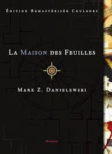
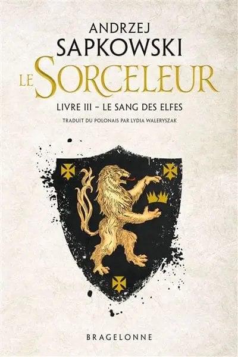
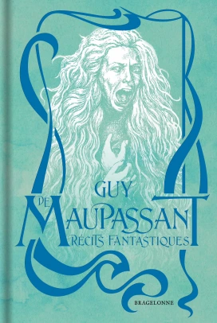

I've always enjoyed spending time reading.
I particularly enjoy fantasy, science-fiction and mystery books.
I also try to learn many things to develop myself : now, I want to learn good coding practices and way of thinking as it will follow me in my carrer :).
Books I'm reading

The House of Leaves
Books backlog
Books I've read
Dracula

The Witcher Tome 3

Récits Fantastiques